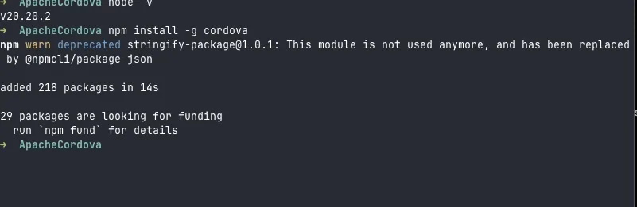
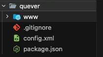
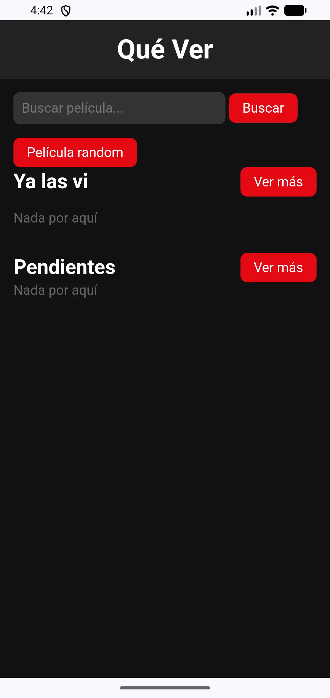
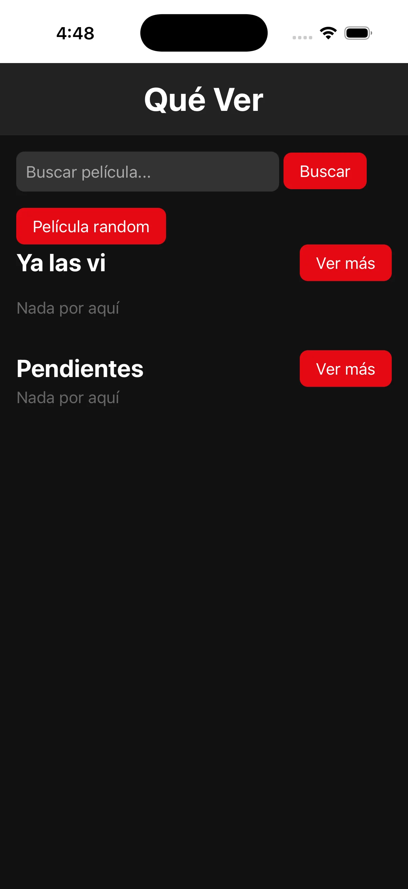

Un recorrido para proyectar, copiar y armar la aplicación. Sigue el orden: cada checkpoint completa al anterior. Esta página enseña a construir QueVer y llevarla a un teléfono, emulador o simulador; la preparación de herramientas vive en el manual.
Antes de empezar: cada persona usa su propia clave de OMDb. Escribe la clave solo en www/js/config.local.js y consérvala al reemplazar los demás archivos.
120 minutos
El recorrido de la clase
Los primeros minutos se usan para la instalación y la explicación. Después se construye la app en seis etapas cortas. Si una persona se atrasa, puede abrir el checkpoint de la etapa actual y continuar desde allí.
0–15Instalación: abre el manual para preparar Cordova, Android o iOS.
15–30Teoría y mapa de Cordova con los decks de teoría e instalación.
30–38Crea QueVer, agrega plataformas y SQLite siguiendo las instrucciones del manual.
38–101Construye la app: datos, búsqueda, guardado, catálogo, edición y recomendación.
101–112Cada alumno lleva su copia a Android, iOS o Browser; la evidencia disponible se resume al final.
112–120Recuperación, dudas y comprobación de la lista final.
Antes del checkpoint 01
Prepara el proyecto
La guía no repite toda la instalación. Sigue el manual hasta tener la carpeta de QueVer, sus plataformas y el plugin SQLite; luego vuelve aquí para construir la interfaz.
Lo que cambia
Pasas de un proyecto Cordova vacío a una carpeta lista para recibir los archivos de QueVer.
Dónde pegar
En la carpeta de tu propio proyecto quever/. Consulta el manual de instalación para cada comando y requisito.
Resultado esperado
Tienes config.xml y la carpeta www/. Aún no esperes una app terminada.
Error común
Confundir la instalación de Cordova con la construcción de QueVer. Si todavía no existe tu carpeta de proyecto, vuelve al manual antes de copiar un checkpoint.
Debería verse así. La instalación deja disponibles el comando y la estructura inicial del proyecto.

Instalación de Cordova en Terminal.

Carpeta inicial de QueVer.
TERMINAL
En la carpeta de tu proyecto quever/
Si el botón no funciona, selecciona solo el texto del panel y cópialo manualmente.
Se crea la base de la pantalla y la conexión local que guardará las películas. Este es el punto de partida acumulativo.
Lo que cambia
QueVer recibe su estructura visual, la configuración de red limitada y la preparación de SQLite con avisos visibles si la base no abre.
checkpoint: 01-datos/
Dónde pegar
Reemplaza config.xml en la raíz de QueVer y copia los archivos indicados dentro de www/. Crea www/js/config.local.js con tu clave.
Resultado esperado
Se ve la base de QueVer. En una plataforma Cordova disponible, el aviso de preparación deja de estar pendiente; si SQLite falta, el aviso explica qué ruta usar.
Error común
Abrir www/index.html directamente en el navegador y esperar SQLite. La aplicación necesita ejecutarse mediante Cordova.
Debería verse así. No hay una captura publicada para esta etapa: al elegir Recomiéndame una, aparece el detalle de una película válida de OMDb con las opciones de guardado. Si la red falla, aparece un aviso y no un modal vacío.
101–112 min
Llévala a una plataforma
Usa la ruta correspondiente del manual para enviar tu propia copia. La guía detallada para Android, iOS y Browser se completará en las siguientes secciones del material; esta evidencia evita presentar esos destinos como promesas.
Resultados reales disponibles
Android: QueVer se compiló y se abrió en el AVD Pixel_4 (Android 17); SQLite se confirmó por logcat.
iOS: con Xcode 26.3, runtime iOS 26.3 y CocoaPods 1.17.0, la compilación para simulador finalizó y SQLite se confirmó en iPhone-17-Pro.
Límite: un iPhone físico no se probó. Requiere abrir el workspace en Xcode, elegir Personal Team, usar un Bundle ID único, confiar en el certificado y activar Modo desarrollador.
Debería verse así. Estas capturas documentan los dos simuladores que sí se comprobaron; no representan una prueba en iPhone físico.

Android: QueVer en el AVD Pixel_4.

iOS: QueVer en el simulador iPhone-17-Pro.
Ruta Android · 101–112 min
Emulador o teléfono Android
Antes de continuar, revisa en el manual de Android que JDK 17, Android SDK, API 36, Build Tools 36.x, Gradle, JAVA_HOME y ANDROID_HOME estén preparados. Esta sección no los reinstala: solo ayuda a elegir un destino y ejecutar QueVer.
1. Elige o crea un AVD
En Android Studio abre Tools > Device Manager, crea o elige un dispositivo virtual y selecciona una imagen compatible con la arquitectura de tu equipo. Si ya tienes un AVD, elígelo allí; no es necesario crear otro.
Mac con Apple Silicon: imagen arm64-v8a.
Mac Intel o Windows: imagen x86_64.
TERMINAL
Solo si necesitas crear una imagen y AVD
Si el botón no funciona, selecciona solo el texto del panel y cópialo manualmente.
# Mac con Apple Silicon
sdkmanager "system-images;android-37;google_apis;arm64-v8a"
avdmanager create avd -n Pixel_4_API_37 -k "system-images;android-37;google_apis;arm64-v8a"
# Mac Intel o Windows
sdkmanager "system-images;android-37;google_apis;x86_64"
avdmanager create avd -n Pixel_4_API_37 -k "system-images;android-37;google_apis;x86_64"
Si SDK Manager muestra licencias pendientes, revísalas y acéptalas solo si estás de acuerdo: sdkmanager --licenses.
2. O conecta tu teléfono
En el teléfono activa Opciones de desarrollador y Depuración USB. Conéctalo por cable, desbloquéalo y acepta la huella RSA cuando aparezca. En Windows instala el driver USB que corresponda al fabricante si el equipo no aparece.
TERMINAL
Comprueba que ADB reconoce el teléfono
Si el botón no funciona, selecciona solo el texto del panel y cópialo manualmente.
adb devices
El estado debe decir device. Si dice unauthorized, desbloquea el teléfono y acepta la huella RSA; si no aparece, revisa cable, Depuración USB y driver en Windows.
3. Compila, abre y confirma
Desde la carpeta quever/, usa un solo destino. Si hay varios emuladores o teléfonos conectados, escribe el nombre del destino después de --target.
TERMINAL
En la carpeta quever/
Si el botón no funciona, selecciona solo el texto del panel y cópialo manualmente.
cordova build android
cordova run android --emulator
cordova run android --device
cordova run android --target=Pixel_4
adb logcat | grep SQLite
Resultado esperado: QueVer abre en el destino elegido y el log registra SQLite. En Q40 se comprobó este recorrido con cordova build android y cordova run android --emulator en el AVD Pixel_4 (Android 17); SQLite se confirmó por logcat. Es evidencia de ese equipo, no una garantía para todos los equipos.
Si algo se detiene
ANDROID_HOME o Java no encontrados
Vuelve al manual y confirma JAVA_HOME, ANDROID_HOME y PATH/Path en una terminal nueva.
Licencias pendientes
Abre SDK Manager o usa sdkmanager --licenses solo tras revisar sus términos.
Sin dispositivo
Inicia o elige un AVD, o revisa adb devices, cable, RSA y drivers de Windows.
Error de Gradle
Comprueba la matriz del manual: Cordova Android 15.x usa como referencia API 24–36, Build Tools 36.x y Gradle 8.14.2. No edites manualmente platforms/android.
Ruta iOS · Mac
Simulador o iPhone
Consulta primero el manual de iOS: se necesita Xcode completo, no solo Command Line Tools. Esta lista concentra las comprobaciones que se necesitaron para el simulador reportado en Q40.
1. Verifica Xcode, runtime y CocoaPods
Selecciona la aplicación completa de Xcode, acepta su licencia y completa su primer inicio. Después descarga el runtime de iOS y prepara CocoaPods. Estos pasos son para tu Mac; no se ejecutan desde esta guía.
TERMINAL
Preparación y comprobación en macOS
Si el botón no funciona, selecciona solo el texto del panel y cópialo manualmente.
Q40 necesitó Xcode completo, runtime iOS 26.3 y CocoaPods 1.17.0. Que estos comandos respondan no convierte por sí solo un proyecto en compatible: solo confirma que las herramientas base están disponibles.
2. Agrega iOS y abre el simulador
Desde quever/, agrega la plataforma con la versión indicada. Lista primero los destinos: el nombre comprobado usa guiones, no espacios.
TERMINAL
En la carpeta quever/
Si el botón no funciona, selecciona solo el texto del panel y cópialo manualmente.
Importante: en Q40 el destino válido fue iPhone-17-Pro. Escribir el nombre con espacios o pegar su UUID falló; usa la salida de cordova run ios --list y copia el nombre que Cordova muestra.
Resultado observado en Q40: la compilación y el simulador terminaron correctamente con SQLite confirmado. Los avisos de AppIntents y LaunchStoryboard no bloquearon la ejecución.
3. iPhone físico — no probado en el demo
Abre platforms/ios/App.xcworkspace en Xcode y conecta tu iPhone desbloqueado.
En Signing & Capabilities, elige tu Personal Team y usa un Bundle ID único.
Activa Modo desarrollador en el iPhone cuando iOS lo solicite y pulsa Run desde Xcode.
En el iPhone, abre Ajustes > General > VPN y gestión de dispositivos y confía en el certificado de desarrollo si aparece el aviso.
Con Personal Team gratuito, el aprovisionamiento suele durar siete días y hay límites de apps activas que Apple puede cambiar. Sirve para pruebas personales, no para distribuir en App Store o TestFlight. Este flujo no se probó durante el demo.
Práctica rápida
Browser
Browser permite seguir la interfaz sin preparar un emulador, pero no reemplaza Android ni iOS. Úsalo como una práctica breve y vuelve a una plataforma nativa para comprobar el recorrido completo.
TERMINAL
En la carpeta quever/
Si el botón no funciona, selecciona solo el texto del panel y cópialo manualmente.
cordova platform add browser
cordova run browser
Límite de Browser: el plugin usa sql.js en este destino; SQLite no persiste al recargar y sus límites de transacciones no equivalen a una app Android o iOS. No abras index.html directamente.
Los comandos de las tres rutas son instrucciones para alumnos; esta guía no los ejecutó.